Co-op Commander Guide: Abathur
Evolution Master
Sections on this Page
Commander Summary
Abathur uses biomass collected from the enemy's fallen units to enhance his own units. Some units can evolve into Ultimate Evolutions - massive units that can lead the charge against Amon.

Level Unlocks
| Level/Icon | Name | Description |
|---|---|---|
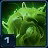 |
Biomass Harvester |
|
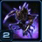 |
Ultimate Evolution | Unlocks the ability for ground units with 100 stacks of Biomass to evolve into Brutalisks. Air units with 100 stacks of Biomass evolve into Leviathans. |
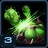 |
Virulent Nests | Enemies damaged by Toxic Nests drop additional biomass and have attack and movement speeds slowed. Toxic Nests have a chance to respawn on death. Toxic Nests cannot be targeted by the enemy. |
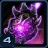 |
Roach Warren Upgrade Cache |
Unlocks the following upgrades at the Roach Warren:
|
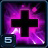 |
Improved Mend | Mend can store up to 3 charges and its cooldown is reduced by 30 seconds. |
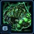 |
Evolution Chamber Upgrade Cache |
Unlocks the following upgrade at the Evolution chamber:
|
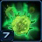 |
Biomass Recovery | When killed, your units have a 50% chance to drop all their Biomass. |
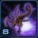 |
New Unit: Viper |
Flying caster. Able to manipulate battlefield conditions. Can use Parasitic Bomb, Consumption, Disabling Cloud, and Abduct abilities. Can attack air units. |
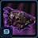 |
Infestation Pit Upgrade Cache |
Unlocks the following upgrades at the Infestation pit:
|
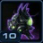 |
Symbiote | Brutalisks and Leviathans gain Symbiotes that follow them, attacking enemies and protecting their host with a damage absorbing shell. |
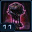 |
Spire Upgrade Cache |
Unlocks the following upgrades at the Spire and Greater spire:
|
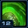 |
Mutagenic Potential | Ravager, Guardian, Devourer morph times and resource costs reduced by 50%. |
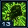 |
Locust Injection | Enemy units have a chance to spawn friendly Locusts upon death. |
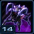 |
Roach Evolution: Vile |
Upgrades Abathur's Roaches to the Vile Strain. Assault unit. Regenerates life quickly while burrowed. Attacks debilitate the target, slowing its attack and movement speeds (by 75%). Can attack ground units. |
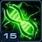 |
Biotic Leech | Abathur's units heal themselves for 1% of the damage they deal per stack of Biomass they possess. |
Highlighted rows denote large power spikes for the commander.
Achievements
The commander-specific achievements for Abathur are:
| Achievement | Name | Description |
|---|---|---|
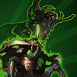 |
Big Game | Deal 500,000 damage with Brutalisks or Leviathans in Co-op Missions. |
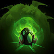 |
Morphology | Morph 50 Ravagers, Devourers, or Guardians in a single mission on Hard difficulty. |
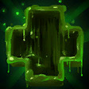 |
Symbiosis | Heal 50,000 life on allied units with Abathur's Mend in Co-op Missions. |
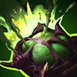 |
Toxicity | Deal 25,000 damage with Toxic Nests on Hard difficulty in Co-op Missions. |
Calldowns
The calldowns for Abathur, at level 15, with no mastery points added are:
| Calldown | Name | Description | Recommended Usage | Numbers |
|---|---|---|---|---|
 |
Spawn Toxic Nest | Spawns a Toxic Nest that generates creep at the select location. Deals damage and slows when enemies walk over them. Enemies damaged with Toxic Nests drop additional biomass. Toxic Nests have a chance to respawn. |
|
|
| Mend | Heal all allied units and structures instantly and provides a heal over time for a small period of time. |
|
|
Note: Biomass drops at a rate of 2.5 biomass per supply of unit killed.
Sub-Ascension Leveling
Difficulty: Easy
The hardest part of leveling Abathur is level 1, where he doesn't have access to his Ultimate Evolutions, which grant a massive power spike to the commander. At this level, build a Roach/Ravager/Queen composition to start. Mutalisks are not too great, because they don't have the life leech from biomass gathering, which makes them very fragile.
While leveling through Mastery levels, allocate points with an equal split on Power Set 3.
Masteries
Below are the three Power Sets for Abathur with the recommended point allocations for each. Note that these are meant to serve a general, all-purpose build that is effective across all maps with no Prestiges selected. You are highly encourged to change these masteries to suit your playstyle and particular challenges you face (e.g. Weekly Mutations).
Power Set 1:
| Power | Value | Recommended Points to Add | Further Considerations |
|---|---|---|---|
| Toxic Nest Damage | 2% per point 60% maximum |
30 | Points can be added to Mend Healing Duration if you would like to get more out of the healing and find it is useful. A possible optimization that can be made is to use the Toxic Nest Damage to 1-shot up to a particular unit and then put the remaining points into the Mend Healing Duration mastery. You may optimize using the Mastery Breakpoints Calculator. |
| Mend Healing Duration | 10% per point 300% maximum |
0 |
Toxic Nest Damage is generally the better choice for an all-round build. Since Queens can fill the role of healing with Abathur, all points should be added to Toxic Nest Damage.
Power Set 2:
| Power | Value | Recommended Points to Add | Further Considerations |
|---|---|---|---|
| Symbiote Ability Improvement | 3.33% per point 99.9% maximum |
30 | The Double Biomass Chance mastery can allow you to get your Ultimate Evolutions faster. It also gives you max biomass units faster, which can be incredibly powerful. If you find you struggle with biomass, putting some points into this mastery might help. |
| Double Biomass Chance | 1.5% per point 45% maximum |
0 |
By playing efficiently, biomass should never be a problem. Additionally, biomass is critical at the early stages in the game as you get your Ultimate Evolutions out, after which they can handle the mission fine. With effective usage of Toxic Nests, you should have more than enough biomass to get your first Ultimate Evolution out and snowball the game.
Power Set 3:
| Power | Value | Recommended Points to Add | Further Considerations |
|---|---|---|---|
| Toxic Nests Maximum Charges and Cooldown | 1 per point 30 maximum |
15 | There should always be a split between these two unless you find you're lacking Toxic Nests. The best way is to find a balance between the cooldown and charges of Toxic Nests and your playstyle. |
| Structure Morph and Evolution Rate | -2% per point -60% maximum |
15 |
Having more Toxic Nests available to you is good, which is why points are added in the first mastery. However, at max level, the Toxic Nest charges you get are way too high to be used efficiently, and so, the other mastery is used to spend the remainder of points.
Prestiges
Below are the prestiges for Abathur. Note that "Effective Level" is the level at which the prestige achieves it full effect.
| Level | Name | Description | Effective Level | Notes |
|---|---|---|---|---|
| 1 | Essence Hoarder |
|
7 |
|
| This prestige is very useful while leveling sub-mastery Abathur in the early levels as Ultimate Evolutions are not very strong without their Symbiotes which unlock at level 10. However, at Mastery level, this prestige remove Abathur's extremely powerful early-game and mobility, and should be avoided. This prestige works well against mutators like Black Death, which heavily punishes Ultimate Evolutions. | ||||
| Level | Name | Description | Effective Level | Notes |
|---|---|---|---|---|
| 2 | Tunneling Horror |
|
9 |
|
| This prestige allows Abathur to move his entire Roach/Ravager army through the Deep Tunnel ability as well as providing buffs to his Swarm Host's Locusts. In general, it isn't very useful, as attack waves can be intercepted by Brutalisks and Toxic Nests. However, this prestige does open up some creative methods that will allow the Abathur player to snipe objectives if they choose to go for a pure ground army, with minimal cost increase to them. | ||||
| Level | Name | Description | Effective Level | Notes |
|---|---|---|---|---|
| 3 | The Limitless |
|
2 |
|
| At first glance, this prestige might look great, but it actually slows down Abathur's powerful earlygame, which is one of his greatest strengths. Abathur's power lies in his ability to clear missions as quickly as possible. This prestige will work well on missions with a fixed time, assuming the Abathur player is active with their Biomass collection, but it should not be the go-to pick for Abathur. | ||||
While leveling Sub-mastery, Essence Hoarder will allow Abathur to recover all the Biomass his army drops after level 7, making it a great choice for general play. Post-mastery, a player can either choose no Prestige talent or Tunneling Horror, depending on their intended playstyle to help them carry them to victory.
Recommended Army Composition
The recommended army composition for Abathur is below. Note that this assumes no Prestige talent selected and recommended Mastery Allocations. This is a basic recommendation for your army framework. It is recommended to gain an understanding for each of the units in the Units section and further add tech units so that you are able to better handle the situations you face.
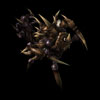
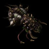
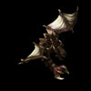
Ultimate Evolutions should make up the core of your army and should be rushed out as soon as possible, as they are significantly stronger than any other unit in Abathur's arsenal. After that, gas income can be spent on upgrades and Mutalisks.
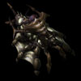
Add Swarm Queens to your army to gain additional healing for your units.
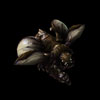
Add Devourers to your army when dealing with armored air units to provide you with armor-shred as well as anti-air splash damage.
Combat Units
For more information on Abathur's unit stats, comparison between units and upgrade calculations, visit the Data Tables page.
Abathur's combat units are listed below:
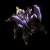
Roach
- They can sometimes be used effectively on infested maps with the Hydriodic Bile upgrade which will increase its damage against light targets.
- Use these to produce your brutalisks due to their low mineral cost.
- Roaches can be used to lure early attack waves into Toxic Nests.
- When fully upgraded, max biomass roaches can have up to 15 armor (1 base, 3 from upgrades, 5 from biomass, 6 from Adaptive Plating).
Skills: None
Upgrades:
| Upgrade | Name | Effect |  / / |
Research Time |
|---|---|---|---|---|
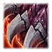 |
Glial Reconstitution | Increases the movement speed of Roaches by 33%. | 100/100 | 110 seconds |
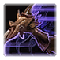 |
Tunneling Claws | Enables Roaches to move while burrowed. Increases the life-regeneration rate of burrowed Roaches by 5. | 100/100 | 110 seconds |
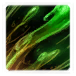 |
Hydriodic Bile | Roach gains +8 damage vs. light units. | 100/100 | 110 seconds |
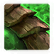 |
Adaptive Plating | Roach gains +6 armor when life is under 50%. | 100/100 | 110 seconds |
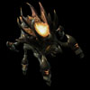
Ravager
- Morphed from Roaches.
- Ravagers can be used to snipe cloaked units if you don't have detection.
- Very large and can sometimes body-block a ground army.
- Very powerful when both upgrades are researched.
- Ability should be bound to Rapidfire.
Skills:
| Skill | Name | Description | Cooldown | Energy Cost |
|---|---|---|---|---|
 |
Corrosive Bile | Launch a missile at the target location, dealing 60 damage to enemy units in the area upon impact. Can destroy Protoss Force Fields. |
10 seconds | 0 |
Upgrades:
| Upgrade | Name | Effect | / |
Research Time |
|---|---|---|---|---|
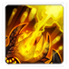 |
Bloated Bile Ducts | Ravager Corrosive Bile impact size is increased by 200%. | 150/150 | 90 seconds |
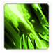 |
Potent Bile | Ravager Corrosive Bile damage is increased by 40. | 200/200 | 120 seconds |
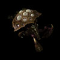
Swarm Host
- Powerful defensive unit.
- Swarm hosts can also be used to push into enemy defenses.
- Deep Tunnel will give them mobility to intercept attack waves.
- Due to high gas costs and short locust life, massing them is usually not viable.
- They are extremely effective on defensive maps.
- Micro will be required, as they hold a higher aggro priority compared to their locusts.
- Attack Speed buffs will reduce Spawn Locust cooldown.
Skills:
| Skill | Name | Description | Cooldown | Energy Cost |
|---|---|---|---|---|
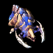 |
Spawn Locusts | Sends Locusts to target location. | 15s | 0 |
| Deep Tunnel | Quickly burrow to a target visible location. | 30 seconds | 0 |
Upgrades:
| Upgrade | Name | Effect | / |
Research Time |
|---|---|---|---|---|
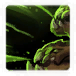 |
Pressurized Glands | Locusts can attack both ground and air units. | 200/200 | 120 seconds |
 |
Deep Tunnel | Allows Swarm Hosts to quickly burrow to any visible location on the map. | 200/200 | 120 seconds |
Mutalisk
- Should be the core unit in Abathur's army composition.
- Extremely weak without biomass.
- Maxed biomass mutalisks can wipe entire attack waves of clumped up units.
Skills: None
Upgrades:
| Upgrade | Name | Effect | / |
Research Time |
|---|---|---|---|---|
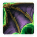 |
Rapid Regeneration | Mutalisks regenerate life quickly while out of combat. | 150/150 | 60 seconds |
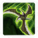 |
Vicious Glave | The Mutalisk's attack bounces three additional times, hitting up to six targets. Bounces also travel farther. | 150/150 | 90 seconds |
| Sundering Glave | Mutalisks deal 100% bonus damage vs. armored units. | 200/200 | 120 seconds |
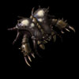
Guardian
- Morphed from Mutalisks.
- Anti-ground siege unit.
- Guardians have long range, but lower DPS than mutalisks.
- Useful on defensive maps.
Skills: None
Upgrades:
| Upgrade | Name | Effect | / |
Research Time |
|---|---|---|---|---|
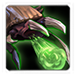 |
Prolonged Dispersion | Guardian attack range is increased by 3. | 200/200 | 90 seconds |
Devourer
- Morphed from the mutalisk.
- Anti-air unit.
- Corrosive Spray upgrade upgrades its attack to an AoE, which can devastate air compositions.
Skills:
| Skill | Name | Description | Cooldown | Energy Cost |
|---|---|---|---|---|
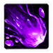 |
Corrosive Acid | Launches acid at all enemy units in the target area, reducing their attack speed by 12.5% and armor by 3. Stacks 3 times. | 45s | 0 |
Upgrades:
| Upgrade | Name | Effect | / |
Research Time |
|---|---|---|---|---|
| Corrosive Spray | Devourer attacks will now deal area damage. | 200/200 | 90 seconds |

Viper
- Crowd-control unit.
- Disabling cloud is a powerful ability to disable enemy ground units.
- Abduct can be used to pull Siege tanks, Carriers and other large units into your army to be focus-fired.
- Parasitic Bomb ability is not as effective as using Devourers for anti-air.
- Virulent Microbes ability is a must-get to increase Viper range.
- Disable automatic evolution to prevent Vipers from evolving into Leviathans, wasting valuable gas.
Skills:
| Skill | Name | Description | Cooldown | Energy Cost |
|---|---|---|---|---|
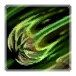 |
Abduct | Pulls target unit to the Viper. Enemy is stunned for 1 second. | 0 seconds | 25 |
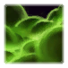 |
Disabling Cloud | Creates a cloud that slows movement speed (-50%) and prevents enemy units and structures from attacking and using energy-based abilities. Lasts for 10 seconds. | 0 seconds | 75 |
 |
Consumption | Drains up to 75 life from a friendly Zerg unit and gives the Viper 2 energy for each point of life drained. | 10 seconds | 0 |
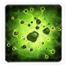 |
Parasitic Bomb | Creates a parasitic cloud of radius 3 that deals 90 damage over 10 seconds to the target and enemy air units nearby. If the target dies, the cloud remains in the air where the enemy died until it expires. Cannot target ground units or structures. |
0 seconds | 125 |
Upgrades:
| Upgrade | Name | Effect | / |
Research Time |
|---|---|---|---|---|
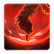 |
Virulent Microbes | All Viper abilities gain +4 cast range. | 50/50 | 60 seconds |
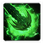 |
Paralytic Barbs | Viper Abduct stuns units for an additional 5 seconds. | 150/150 | 60 seconds |
Swarm Queen
- Does not have movement speed penalty off creep.
- Can provide healing support for your army.
Skills:
| Skill | Name | Description | Cooldown | Energy Cost |
|---|---|---|---|---|
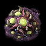 |
Spawn Creep Tumor | A burrowed creep generator. Creep feeds nearby Zerg structures. A Creep Tumor can spawn additional Creep Tumors. Bonus: Zerg move faster on creep. |
3s | 0 |
| Rapid Transfusion | Heals a biological unit or structure for 25 life over time. | 3s | 10 |
Upgrades:
| Upgrade | Name | Effect | / |
Research Time |
|---|---|---|---|---|
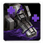 |
Bio-Mechanical Transfusion | Increases the healing of the Swarm Queen's Rapid Transfusion by 10 and allows it to heal mechanical units and structures. | 100/100 | 60 seconds |
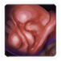 |
Incubation Chamber | Allows Hatcheries, Lairs and Hives to birth two Swarm Queens simultaneously. | 100/100 | 60 seconds |
Brutalisk
- Powerful ground Ultimate Evolution.
- Evolves from ground units. Recommended to evolve from roaches.
- Frontal cleave attack is splash, which can be effected to clear swarms of enemies.
- Vulnerable to units that deal extra damage to armored units like Immortals.
- Deep Tunnel ability only has a 10-second cooldown which gives Brutalisks extremely good mobility even without vision.
Skills:
| Skill | Name | Description | Cooldown | Energy Cost |
|---|---|---|---|---|
| Deep Tunnel | Quickly burrow to target location. | 10 seconds | 0 |
Upgrades: None
Leviathan
- Powerful air Ultimate Evolution.
- Evolves from air units. Recommended to evolve from mutalisks.
- Due to tech requirements, it is recommended to get Brutalisks first.
Skills: None
Upgrades: None
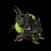
Symbiote
- Accompanies Ultimate Evolutions, dealing damage and providing defensive buffs.
- Can provide a 200HP shell that lasts for 8 seconds (without masteries). 20 second cooldown.
- Deals 20 DPS to a unit within 6 range (without masteries).
- Forces all aggro'ed enemy units within 8 range to attack the Ultimate Evolution instead of other allied units.
Skills: None
Upgrades: None
Build Order
Below is the standard economic build order for Abathur. For more information on how to read and construct your own build orders, please check the Build Order Theory page.
14 Overlord
17 Roach Warren
20 Spine Crawler
19 Spine Crawler
18 Extractor
17 Extractor
20 Roach
22 Overlord
22 Hatchery
22 Extractor
22 Extractor
Gameplay Guide
Playstyle Traps
A common trap for Abathur players is to go for a mass Roach build. While Roaches can potentially reach 15 armor, they do not deal a lot of damage and can have a lot of trouble dealing with attack waves and objectives.
Additionally, the mass Roach build cannot deal with air units, causing players to resort to converting some Roaches to Ravagers. Ravagers can, however, work well, given a player has sufficient experience. Effectively dealing with air unit using Corrosive Bile will require a little practice.
Biomass Calculation
Biomass drops are calculated as follows:
- Calculate the Base Biomass drop:
- If the unit is a Critter, base drop is 1
- If the unit is a Hybrid, base drop is 12
- If the unit's supply is more than 4, base drop is 12
- Otherwise, base drop is 2 x Unit Supply
- Calculate the Bonus Multiplier:
- Bonus multiplier is set at 1
- If the unit was damaged by a Toxic Nest, bonus multipler is 1.5
- Override the bonus multiplier with a value of 2 with a random chance based on the Double Biomass Chance Mastery allocation
- Calculate the Difficulty Multiplier:
- For Brutal difficulty, this is 1.25
The Biomass dropped is the Base Biomass Drop x Bonus Multiplier x Difficulty Multiplier
Biomass Effects
Units can collect Biomass drops (up to a maximum of 100) to become stronger. The effects of 100 Biomass are shown below for each of Abathur's units:
| Unit | Max Biomass Effect |
|---|---|
| Roach | 300% Life 100% Attack Speed +5 Armor 100% Biotic Leech |
| Ravager | 300% Life 100% Attack Speed 100% Biotic Leech 50% Corrosive Bile Cooldown |
| Swarm Host | 300% Life 50% "Spawn Locusts" Cooldown |
| Locust* | 300% Life 100% Attack Speed 100% Biotic Leech |
| Mutalisk | 300% Life 100% Attack Speed 100% Biotic Leech |
| Guardian | 300% Life 100% Attack Speed 100% Biotic Leech |
| Devourer | 300% Life 100% Attack Speed 100% Biotic Leech |
| Viper | 300% Life 100% Attack Speed 100% Biotic Leech 500% Energy Regeneration |
| Swarm Queen | 300% Life 100% Attack Speed 100% Biotic Leech 500% Energy Regeneration |
*Locust buff based on parent Swarm Host biomass.
Toxic Nest Usage
When Toxic Nests are placed on the ground, they detonate as soon as enemy units touch them. This is sometimes suboptimal and it may be worth setting up a few nests to manual detonation by right-clicking the Detonate ability. The reason is shown below.
When a stream of enemies run towards a nest, the nest will detonate when the first one (the one leading the group) touches the nest, as shown below:
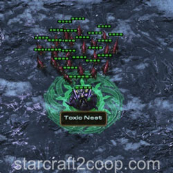
The result is a highly reduced amount of biomass gained, because only a few units are killed and not all of the Nest's Area of Effect is utilized. Additionally, the units in the attack wave may still be alive.
A more efficient use of the Toxic Nest is to detonate it when the attack wave is in the middle of the nest. This maximizes the damage of the nest. It is recommended to re-enable automatic detonation to detonate the nests, rather than manually detonating nests in a group to prevent you from detonating unncessary nests.
The result is significantly more biomass obtained. It is possible to wipe out small attack waves with a single nest.
When placing several nests, it is recommended to use a checkerboard pattern for nests to maximize nest damage cover and minimize unnecessary overlap of the nest damage area.
A video is below:
Biomass Farming
This section provides the recommended location to farm Biomass on all the maps currently present in Co-op. The most efficient farming technique is to place your Toxic Nests down, disable the automatic detonation on the nests, and use a Spore Crawler to lure units into the nests. Usually, the first attack wave will spawn near where you are farming, allowing you to clear it too. Once you have your first Brutalisk, you can use it to lure to farm additional Biomass.
In general, Zerg provides the easiest Biomass farming, due to the large presence of weak units. Terran is most difficult, due to the fact that units are normally hiding inside Bunkers.
| Mission | Farming Location |
|---|---|
| Chain of Ascension | |
| Cradle of Death | |
| Dead of Night | |
| Lock & Load | |
| Malwarfare | |
| Miner Evacuation | |
| Mist Opportunities | |
| Oblivion Express |
This is a risky approach due to the presence of air units. The goal is to kill off enough ground units to produce 100 Biomass so that a Brutalisk may be made to take care of the air units. If you are uncomfortable with this method, farm Biomass near the top left camp entrance and wait for the attack wave. |
| Part & Parcel |
Enemy race will determine where to gather Biomass. These areas are shown in the image. |
| Rifts to Korhal | |
| Scythe of Amon |
Clear out the enemy camp outside Player 2's base first to give you a small amount of Biomass. Continue luring units that are spawned from the expansion Sliver's Void Rifts. |
| Temple of the Past |
Place Toxic Nests in front of the middle lane's rocks to clear the attack wave before they deal damage to the rocks. |
| The Vermillion Problem |
Against Terran, you may farm Biomass from the island on the left first before moving to the central island. |
| Void Launch |
After you clear the units in the marked area, place Toxic Nests near the spawning location to clear the attack wave. |
| Void Thrashing |
Playstyle Tips
- At the start of the game, spawn Toxic Nests and use a Roach or Spore crawler to lure enemies into them to get your Ultimate Evolution out as fast as possible.
- Clear your expansion with two spine crawlers and a Toxic Nest to spread creep for them.
- Always aim to have all six Ultimate Evolutions out, starting with at least one Brutalisk.
- Focus your biomass collecting on one unit at the start of the game, rather than spreading it out across all your units to speed up getting your Ultimate Evolutions.
- Keep Brutalisks away from units that deal bonus damage to armored units like Immortals.
- Add Swarm Queens to enhance survivability of your army.
- Use Devourers to counter air compositions.
- Often with Abathur, you will float minerals. Make Spine and Spore Crawlers (with creep from Toxic Nests) at strategic locations as a mineral dump.
- More skilled players can disable the Toxic Nest auto-detonate and re-anable it when enemies clump over the nests to increase nest efficiency.
- More skilled players can add two to four Vipers to their composition and make use of Disabling Cloud and Abduct.
- Loading units into Nydus Worms will prevent them from taking DoT (damage over time) damage.